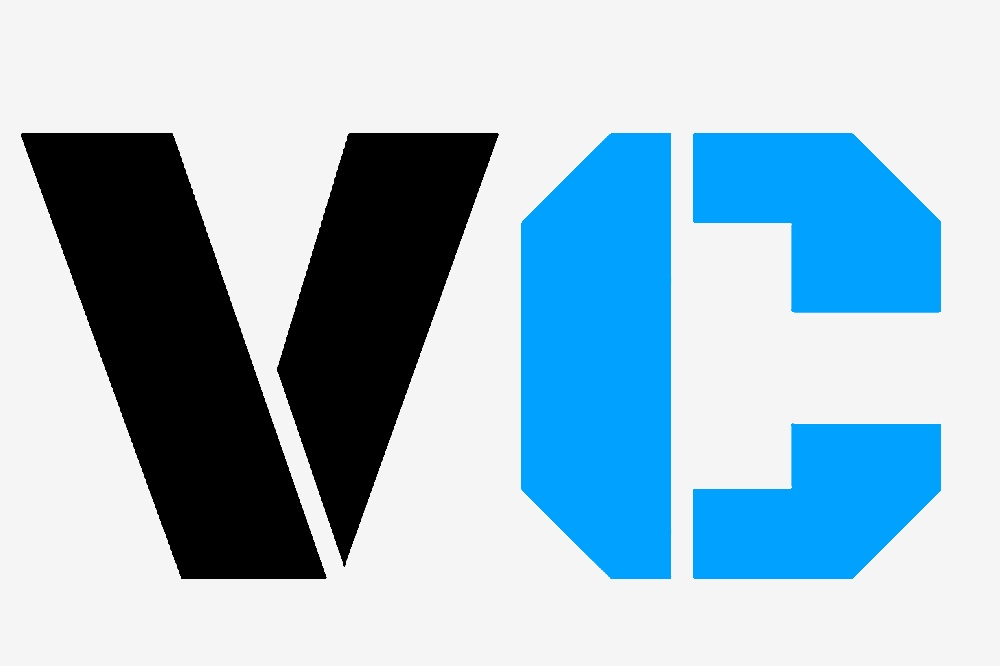

<mat-toolbar  >
    
    <span > VCheck</span>
    <span class="example-spacer"></span>
    <div class="main-buttons" > 
      <button mat-button  >
        Aide
      </button>
      <button mat-button  >
        Exemple 
      </button>
      <button mat-button  >
        Nous Contacter
      </button>

    </div>
    <button mat-button class="gap-button" >
      <i class="material-icons">account_circle</i>
      
    </button>
    
  </mat-toolbar>